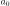
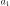
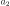
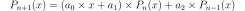

OrthonormalizationAlgorithm¶
-
class
OrthonormalizationAlgorithm(*args)¶ Algorithm used to build the orthonormal basis.
With respect to a specific distribution.
- Available constructors:
OrthonormalizationAlgorithm(orthoAlgoImp)
OrthonormalizationAlgorithm(measure)
Parameters: - orthoAlgoImp : OrthonormalizationAlgorithmImplementation
An orthonormalization algorithm implementation.
- measure :
Distribution A distribution for which the orthonormal polynomial basis is built.
See also
Notes
It enables to build the orthonormal polynomial basis with respect to the given distribution.
In the first usage, the algorithm orthoAlgoImp is used (that specifies the associated distribution). In the second usage, the Gram-Schmidt algorithm is used by default. Only the distribution measure is specified.
Attributes: thisownThe membership flag
Methods
getClassName()Accessor to the object’s name. getId()Accessor to the object’s id. getImplementation(*args)Accessor to the underlying implementation. getMeasure()Accessor to the measure. getName()Accessor to the object’s name. getRecurrenceCoefficients(n)Accessor to the recurrence coefficients. setMeasure(measure)Accessor to the measure. setName(name)Accessor to the object’s name. -
__init__(*args)¶ Initialize self. See help(type(self)) for accurate signature.
-
getClassName()¶ Accessor to the object’s name.
Returns: - class_name : str
The object class name (object.__class__.__name__).
-
getId()¶ Accessor to the object’s id.
Returns: - id : int
Internal unique identifier.
-
getImplementation(*args)¶ Accessor to the underlying implementation.
Returns: - impl : Implementation
The implementation class.
-
getMeasure()¶ Accessor to the measure.
Returns: - m :
Distribution The measure for which the orthonormal polynomial basis is built.
- m :
-
getName()¶ Accessor to the object’s name.
Returns: - name : str
The name of the object.
-
getRecurrenceCoefficients(n)¶ Accessor to the recurrence coefficients.
Parameters: - n : integer
Index ot the recurrence step.
Returns: - coef : sequence of float
Calculate the coefficients of recurrence , ,  such that .
-
setMeasure(measure)¶ Accessor to the measure.
Parameters: - m :
Distribution The measure for which the orthonormal polynomial basis is built.
- m :
-
setName(name)¶ Accessor to the object’s name.
Parameters: - name : str
The name of the object.
-
thisown¶ The membership flag